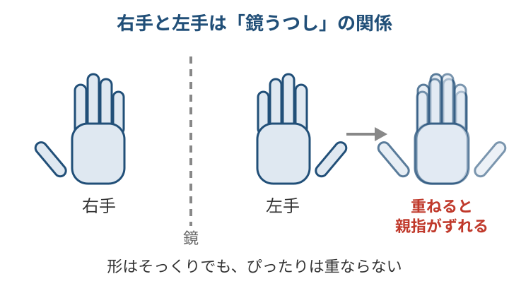
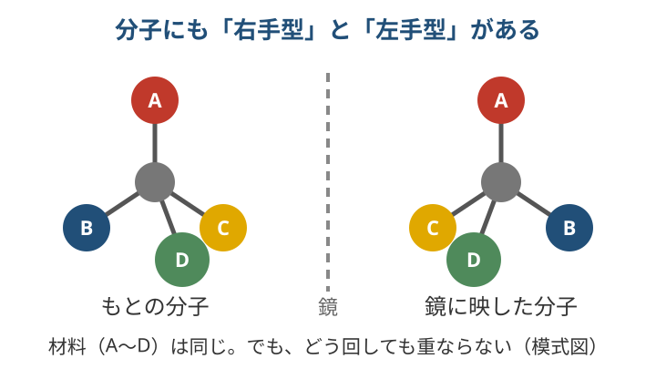
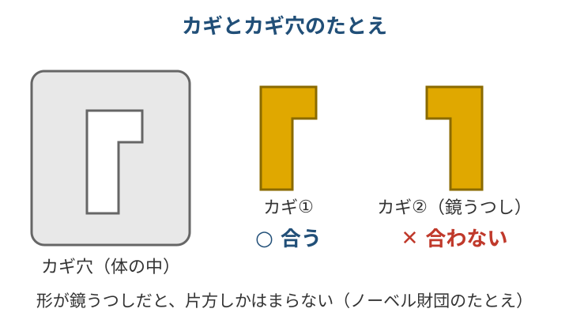
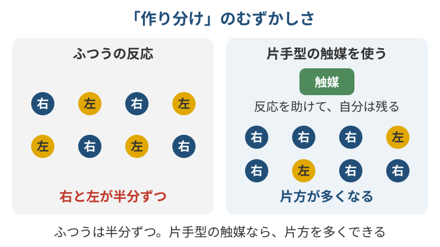
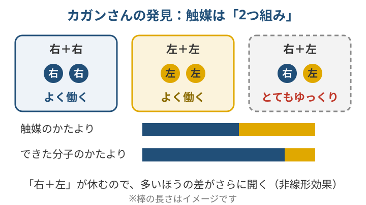
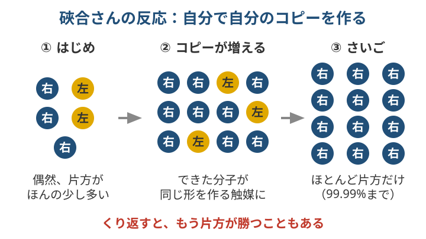

2026年ノーベル化学賞をやさしく解説｜鏡像分子と「硤合反応」
2026年のノーベル化学賞は、「鏡に映したような2つの分子」の研究に決まりました。
受賞者の一人は、東京理科大学の硤合憲三（そあい・けんそう）さんです。ニュースで「鏡像」「キラル」という言葉を聞いて、むずかしそうと感じた人も多いと思います。
この記事では、右手と左手のたとえを使って、できるだけやさしく説明します。
1. 何が受賞したの？
2026年10月7日、スウェーデン王立科学アカデミーが発表しました。受賞したのは次の2人です。
- アンリ・カガンさん（フランス、1930年生まれ）：パリ南大学（当時の名前）
- 硤合憲三さん（日本、1950年生まれ）：東京理科大学の名誉教授（大学は受賞決定後に「栄誉教授」の称号を贈ることを決めました）
受賞理由は、英語で「for the discovery of non-linear effects and autocatalysis in asymmetric organic synthesis」です。日本語では「不斉有機合成における非線形効果および自己触媒作用の発見」と訳されています。
やさしく言いかえると、こうなります。
「右手型と左手型がある分子を作るとき、片方だけをどんどん増やす仕組みを見つけた」
賞金は1200万スウェーデン・クローナで、2人で半分ずつ分けます。授賞式は12月10日です。日本からの化学賞は、2025年の北川進さんに続いて10人目です。
2. 鏡像分子（キラリティ）ってなに？
両手を前に出して、手のひらを見てください。
右手と左手は、形がそっくりです。でも、ぴったり重ねることはできません。右手を鏡に映すと、左手の形になります。

図：右手と左手は鏡うつしの関係。形はそっくりでも、ぴったり重なりません。
分子の中にも、これと同じ関係の「2つの形」をもつものがあります。材料は同じなのに、形が鏡うつしになっているのです。こういう分子をキラル（ギリシャ語の「手」から）と呼びます。

図：同じ材料でできていても、鏡うつしの2つの分子は回しても重なりません（模式図で、実際の分子の形ではありません）。
体の中では、片方しか使われていない
ふしぎなことがあります。
私たちの体のたんぱく質は、アミノ酸という分子でできています。アミノ酸にも右手型と左手型があります。でも、体のたんぱく質に使われているのは、片方だけです。もう片方は、自然の中ではあまり見つかりません。
DNAに含まれる糖も同じで、生き物は片方の形だけを使っています。
このように「片方の手だけそろっている」状態を、ホモキラリティ（「同じ手」という意味）と呼びます。
なぜ、形のちがいが大事なの？
ノーベル財団の一般向け解説は、カギとカギ穴のたとえを使っています。
カギを作ると、いつも鏡うつしの2本ができてしまう。でも、カギ穴に合うのは片方だけ。もう片方を差しこむと、カギ穴がこわれることもある――というたとえです。

図：ノーベル財団のたとえを図にしたもの。鏡うつしのカギは、片方しかカギ穴に合いません。
薬も同じです。解説によると、薬の分子の多くは2つの形があり、片方は病気に効きます。でも、もう片方は役に立たなかったり、ときに害のある副作用を起こしたりします。
その例として、解説は1960年代はじめのサリドマイドの薬害にふれています。鎮静剤（気持ちを落ち着かせる薬）が原因で、数千人の子どもに生まれつきの障がいが起きました。その後の分析で、害をもたらしたのは薬の成分の「鏡うつしの形」だったと説明されています。片方だけを作ることがどれほど大事かを示した出来事として、紹介されています。
3. これまで何がむずかしかったの？
化学者が試験管で反応を起こすと、右手型と左手型はほぼ半分ずつできてしまいました。
手袋工場で、右手用と左手用が必ず同じ数だけできてしまう、と考えるとわかりやすいかもしれません。右手用だけがほしいのに、どうしても左手用もまざってしまうのです。
1900年代のはじめ、ドイツの化学者マルクヴァルトが、片方を少しだけ多く作ることに初めて成功しました。カギは触媒です。触媒とは、反応を進めるけれど、自分は使いきられない物質のことです。触媒そのものを片方の手の形にしておくと、作られる分子も片方にかたよるのです。ただ、そのちがいはとても小さなものでした。

図：ふつうの反応では右手型と左手型が半分ずつ。片手型の触媒を使うと、片方を多くできます（数はイメージです）。
1953年には、物理学者のチャールズ・フランクが、「片方の手だけになる」ための3つの条件を、理論として示しました。
- 片方の手の形をした触媒で、かたよった反応を起こす
- 片方ができる反応を強め、もう片方を弱める
- できた分子が、自分と同じ分子を作る触媒になる（自己触媒）
条件1は、その後の研究者たちが大きく進めました。ノーベル財団によると、その先駆者たちは2001年と2021年にノーベル化学賞を受けています。今回の受賞は、残りの条件2と3を実際の反応で実現したことが評価されました。
4. 2人は何をしたの？
カガンさん：まぜても、片方が勝つ（1986年）
当時の化学者は、こう考えていました。
「触媒に右手型と左手型がまざっていたら、作られる分子も同じ割合でまざるはずだ」
カガンさんは、ここを疑いました。
触媒の中心には金属の原子があり、そこに手の形をした分子が2つくっつく、と考えたのです。すると、触媒には「右右」「左左」「右左」の3種類ができます。
実験してみると、「右左」の触媒は、とてもゆっくりしか働きませんでした。そのため、多いほうの「右右」（または「左左」）が反応を進めます。結果として、できた分子のかたよりが、触媒のかたよりより大きくなったのです。
たとえるなら、右手チームと左手チームの綱引きです。まざった「右左」の人たちは休んでいて、人数が多いほうのチームがどんどん引っぱる。そのため差が開いていく、というイメージです。
この「割合どおりにならない」現象を、非線形効果と呼びます。フランクの条件2を満たした発見でした。

図：カガンさんの非線形効果。「右＋左」の触媒がゆっくりなので、できた分子のかたよりは触媒のかたよりより大きくなります（棒の長さはイメージです）。
硤合さん：自分で自分を増やす反応（1995年・2003年）
硤合さんは、反応の触媒と、できあがった分子の形がよく似ていることに気づきました。
そこで考えたのが、「できた分子が、そのまま次の反応の触媒になる」反応です。
1995年の論文では、はじめに片方がわずか2%多い状態から始めて、最後には87%多い状態まで増えました。
そして2003年、硤合さんはさらに先へ進みました。最初は、偶然によって片方がほんの少しだけ多くできます。その小さな差が、反応全体を乗っ取るように広がり、最後は片方が99.99%を占めるまでになりました。
たとえるなら、コピー機です。右手型の分子は右手型のコピーを、左手型は左手型のコピーを作ります。最初に少しでも多かったほうが、コピーをどんどん増やして、最後はほとんどそれだけになります。
おもしろいのは、くり返すと、もう片方が勝つこともあった点です。どちらが勝つかは、最初の偶然で決まっていました。
ノーベル財団は、生命そのものを除けば、これを成しとげた人はそれまでいなかったと説明しています。この反応は「硤合反応（Soai reaction）」と呼ばれます。

図：硤合反応のイメージ。最初の小さな差が自分のコピーで広がり、最後はほとんど片方だけになります。
5. 何に役立つの？
ノーベル財団の解説では、次のように説明されています。
- 薬：体の中で働く物質は、できるだけ片方だけの「純粋な形」で作ることが大切です。カガンさんの非線形効果は、反応がどう進むかを知る手がかりになり、反応を改良するのに使われています。
- 味や香りの成分、農薬：これらも生き物に働きかける物質なので、同じように大切だとされています。
- 新しい材料：場合によっては、材料づくりでも重要になります。
- 生命の起源の研究：硤合反応は生命の化学とはちがう人工の反応です。それでも、世界の研究者が同じように、アミノ酸や糖を片方だけ作ることに挑んでいます。
6. なぜ受賞したの？
ノーベル化学委員会の委員長、ハイナー・リンケさんは、2人の研究について「100年以上前からの化学のなぞ、つまり、片方の手だけの状態が自然にどうやって生まれるのか、に答えを出した」と述べています（発表文の英語を筆者が訳したものです）。
この「なぞ」の始まりは、1800年代のパスツールです。パスツールは、ワインづくりに関係する酒石酸という物質の結晶に、鏡うつしの2種類があることを見つけました。1857年には、細菌が片方の形だけを分解し、もう片方には手をつけないことも観察しています。ここから「生命の化学は片方の手にかたよっている」という考えが生まれました。
ノーベル財団によると、今回の受賞は、このなぞに答えを出したことに加えて、化学者が毎日の仕事で使える新しい道具をもたらしたことも評価されています。
7. まとめ
- 分子には、右手と左手のような「鏡うつしの2つの形」をもつものがある
- カガンさんは「多いほうが勝つ」非線形効果、硤合さんは「自分で自分を増やす」反応を見つけた
- 片方だけを作る技術は薬などの開発に役立ち、生命の起源のなぞにもつながっている
用語ミニ辞典
- キラル：右手と左手のように、鏡うつしだけれど重ならない形をもつこと
- 鏡像異性体（エナンチオマー）：おたがいに鏡うつしの関係にある2つの分子
- ホモキラリティ：片方の手の形だけにそろっている状態
- 触媒：反応を進めるけれど、自分は使いきられない物質
- 不斉合成：片方の手の形の分子を多く作り分ける合成
- 自己触媒：できた分子が、自分と同じ分子を作る触媒になること
- 非線形効果：触媒のかたよりと、できた分子のかたよりが、同じ割合にならないこと
出典
- NobelPrize.org「Press release: Nobel Prize in Chemistry 2026」 https://www.nobelprize.org/prizes/chemistry/2026/press-release/ （発表日、受賞者・生年・所属、受賞理由の原文、アミノ酸のホモキラリティ、試験管では半分ずつできる、医薬品では片方だけが目的の効果、リンケ委員長の言葉、1986年・1995年・2003年の業績、賞金と等分）
- NobelPrize.org「Popular information: They solved chemistry's asymmetric mystery」 https://www.nobelprize.org/prizes/chemistry/2026/popular-information/ （カギのたとえ、薬の片方が副作用を起こすこと、DNAの糖、パスツールと酒石酸・1857年の細菌の観察、マルクヴァルトと触媒、フランクの3条件、2001年・2021年の受賞、サリドマイドの説明、カガンの「右右・左左・右左」と非線形効果、硤合反応の2%→87%と99.99%・偶然で決まること、薬・味・香り・農薬・材料への重要性、生命の起源研究）
- NobelPrize.org「Nobel Prize in Chemistry 2026」 https://www.nobelprize.org/prizes/chemistry/2026/summary/ （受賞者と受賞理由）
- 東京理科大学「硤合憲三栄誉教授ノーベル化学賞記念ページ」 https://www.tus.ac.jp/about/nobelprize2026/index.html （不斉自己触媒反応を世界で初めて発見、硤合反応の名前、1950年生まれ、略歴）
- 東京理科大学「硤合名誉教授に栄誉教授の称号授与を決定」 https://www.tus.ac.jp/today/archive/20261008_3513.html （栄誉教授の称号授与）
- JST サイエンスポータル「ノーベル化学賞に硤合憲三氏ら2氏 鏡像異性体の不斉自己触媒作用発見」 https://scienceportal.jst.go.jp/newsflash/20261007_n01/ （受賞理由の日本語訳、日本から10人目の化学賞、授賞式は12月10日）
※この記事はAIを活用して作成し、出典の公式ページで2026年10月19日に確認しています。
新しい無料ツールや記事を、LINEでお知らせします
「ツール」「お金」「スマホ」と送ると、合うツールの案内が自動で届きます。